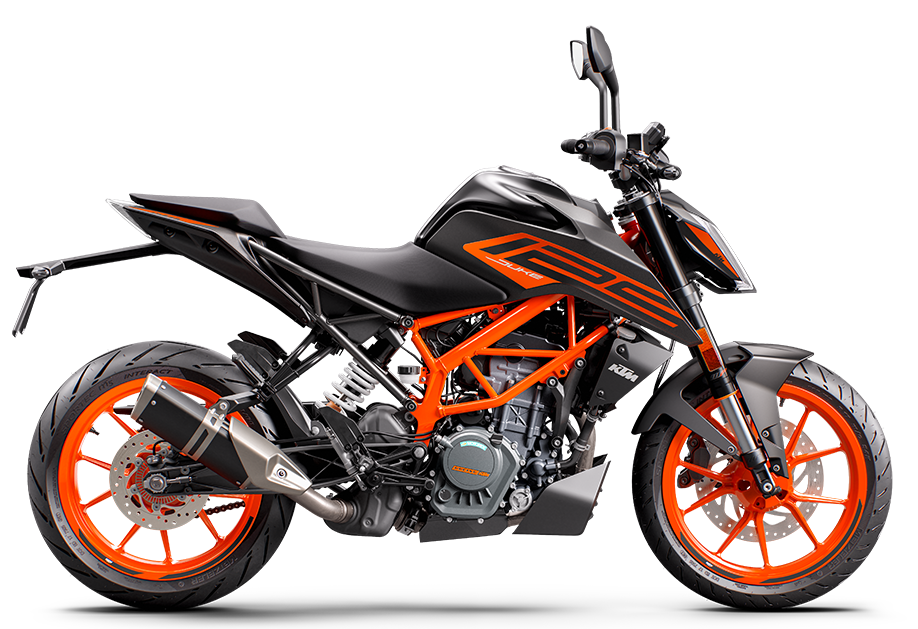

Esta página es una prueba para que aprendais CSS, a parte para que lo apliqueis,
para que veais la importancia de una buena hoja de estilos.
si pulsas Aqui verás el porque de mi selección| Marca: | Keeway | Yamaha | Suzuki | KTM |
| Nombre: | keeway RFK 125 | Yamaha YZF 125 | Suzuki GSXR 125 | KTM Duke 125 |
| Link de pagina(Para comprar) | Link RKF 125 | Link YZF 125 | Link GSXR 125 | Link Duke 125 |
| Fotillos |  |